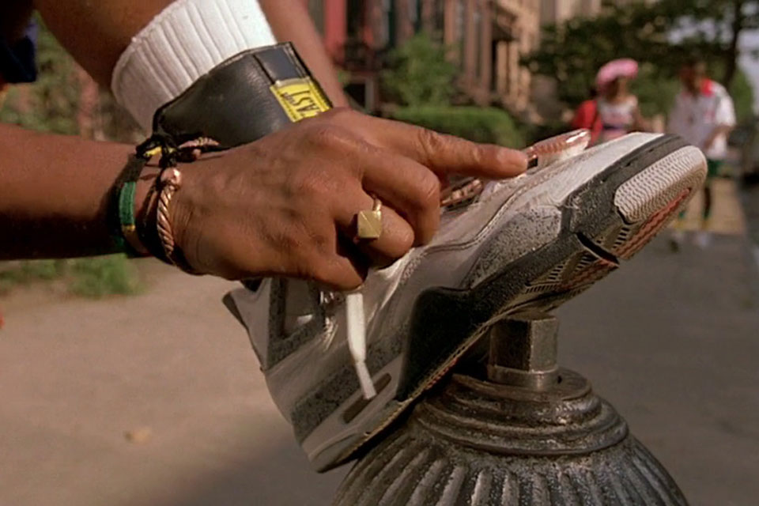

|
|
 |
Basketball, Hip-Hop and movies drew me into the world of sneakers. Growing up, I wasn't allowed to get expensive shoes because, well, I was a kid and didn't necessarily know how to take care of my belongings. For the longest time I kept up with the latest styles through friends and pop culture but didn't have the chance to purchase my own sneakers until after graduating from high school.
In 2004, I purchased my first pair of Jordans at my local mall. But my first visit to a "boutique" type of store happened the same year at a store called Huf. Now closed, it was located on Sutter Street in San Francisco and owner Keith Hufnagel currently has a clothing line available online.

Walking into Huf was a pretty awesome experience. There was a bunch of sneakers on display that I had never seen. It was like I had stumbled upon a secret collection that not many people knew about. At the time, I was starting to get into the Air Force 1 line and settled on a brown pair. I think I ended up wearing them so much that they got pretty beat up. I'm always on the hunt for another pair but can't seem to find them anywhere.
 |
 |
Although there are many Jordan Brand models, there's only a few that I like. Jordan 4's were the first shoes that drew me into Sneakers. From there, I learned about other models but the last model that I liked was the 13s. Michael Jordan retired for the second time with a pair of 14s on. After the 14s, just like Jordan, quality dropped.
 |
I was never really a big fan of Adidas, but I started hearing how comfortable the Boost technology was on their newer shoes. The first model that drew my attention was the 93/17. I enjoyed the design and colors, but the boost made it feel like your feet were sitting on clouds. From there, I moved on to NMDs and some Yeezys. The newest release that I own is the Nite Jogger. Since I'm on my feet so often during the day, whenever I want added comfort I throw on a pair of Adidas.
Vans don't really need any kind of introduction because they are a big part of California culture. I had a lot of skater friends growing up, watching them skate in Vans drew me to the brand.
In High School, Eastbay was the best way to stay up to date on releases, along with word of mouth. In 2002, through extensive web research, I stumbled upon a message board that would change my way of acquiring sneakers, NikeTalk. It wasn't just a message board, it was an entire community dedicated to helping each other to buy and stay informed on the latest sneakers. Although Jordans originally brought me into sneakers, NikeTalk showed me that there were other great models out there too. I don't frequent NT as often anymore, but I do still stay in touch with some folks I met through the site.
Have questions, suggestions, or just want to say hello? Click here